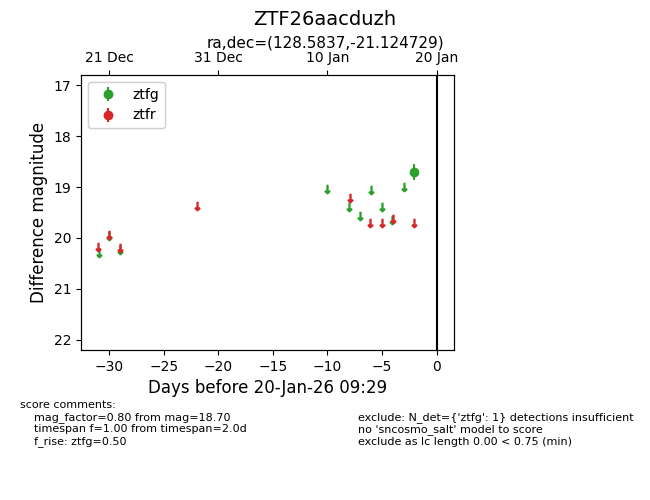
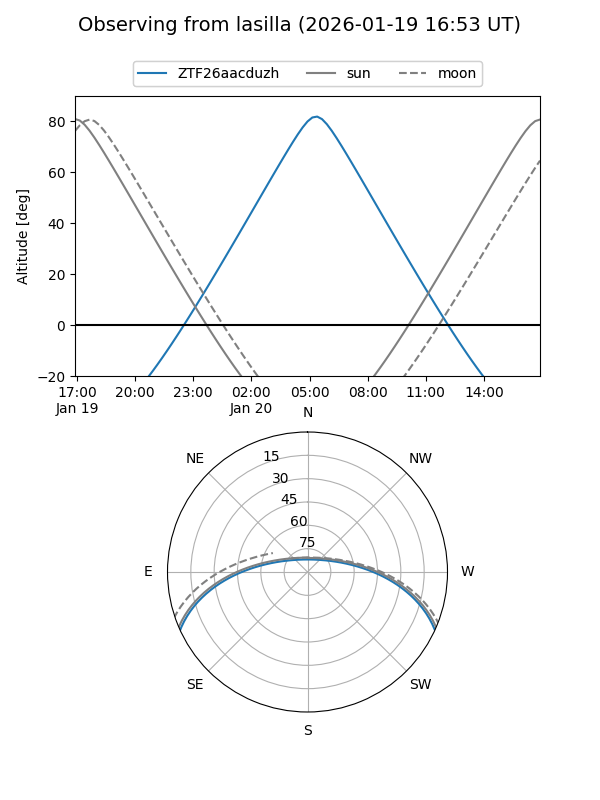
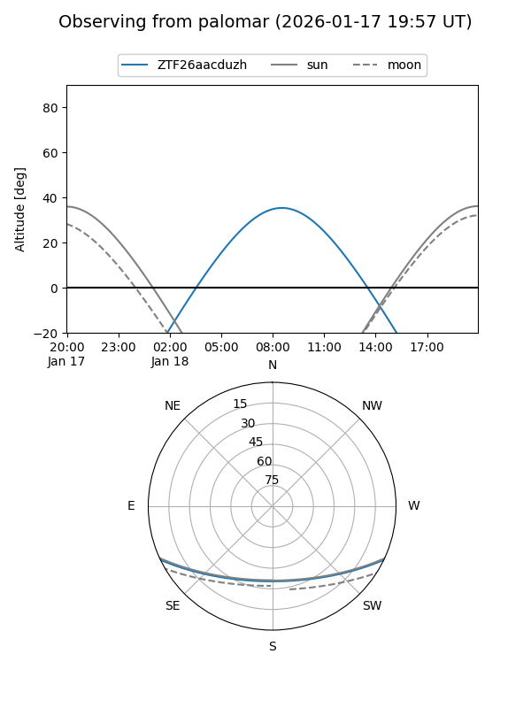

ZTF26aacduzh
Target ZTF26aacduzh at 2026-01-18 09:30
Aliases and brokers:
FINK: link
Lasair: link
ALeRCE: link
alt names
ZTF26aacduzh (ztf,fink_ztf)
Coordinates:
equatorial (ra, dec) = 128.5837,-21.12473
equatorial (HMS+DMS) = 08:34:20.09,-21:07:29.02
galactic (l, b) = (243.9536,+11.30285)
Flags:
Photometry:
last ztfg=18.70
1 ztfg detections
Lightcurve

Visibility


Additional plots